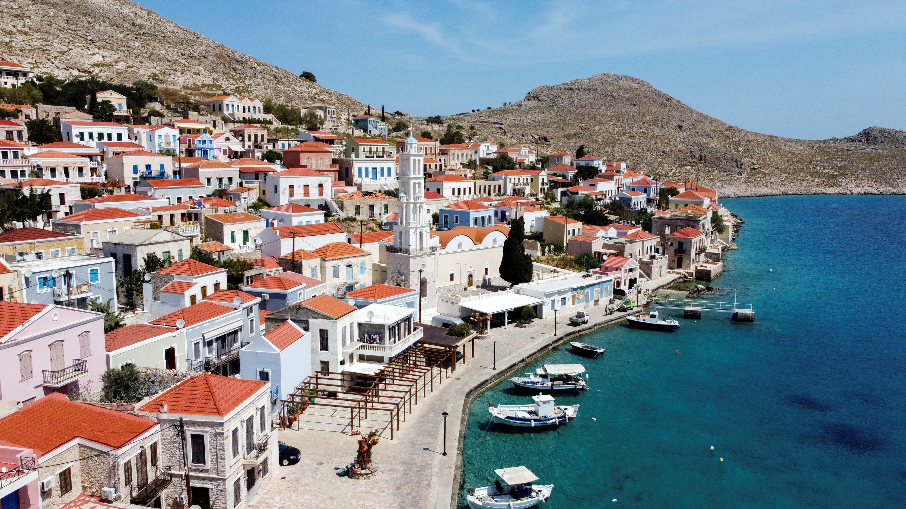

top 5 best countries to visit
1. Spain

From Madrid and Barcelona to Valencia and Seville when it comes to must-see places in Spain, we really are spoiled for choice in Spain. The vibrant cities of Madrid and Barcelona are world-renowned for their arts and culture scene, fantastic food, incredible museums and impressive shopping options
Click here for more about the country(Spain)2. Italy

Italy, a European country with a long Mediterranean coastline, has left a powerful mark on Western culture and cuisine. Its capital, Rome, is home to the Vatican as well as landmark art and ancient ruins. Other major cities include Florence, with Renaissance masterpieces such as Michelangelo’s "David" and Brunelleschi's Duomo; Venice, the city of canals; and Milan, Italy’s fashion capital.
Click here for more about the country(Italy)3.NewZealand

New Zealand is an island country in the southwestern Pacific Ocean. It consists of two main landmasses—the North Island and the South Island —and over 700 smaller islands, covering a total area of 268,021 square kilometres.
Click here for more about this country(Newzealand)4.THAILAND

Thailand is a Southeast Asian country. It's known for tropical beaches, opulent royal palaces, ancient ruins and ornate temples displaying figures of Buddha. In Bangkok, the capital, an ultramodern cityscape rises next to quiet canalside communities and the iconic temples of Wat Arun , Wat Pho and the Emerald Buddha Temple (Wat Phra Kaew). Nearby beach resorts include bustling Pattaya and fashionable Hua Hin.
Click here for more about this country(Thailand)5.Japan

Japan is an island country in East Asia, located in the northwest Pacific Ocean. It is bordered on the west by the Sea of Japan, and extends from the Sea of Okhotsk in the north toward the East China Sea and Taiwan in the south.
Click here for more about this country(Japan)5.Greece

Greece is a country in southeastern Europe with thousands of islands throughout the Aegean and Ionian seas. Influential in ancient times, it's often called the cradle of Western civilization. Athens, its capital, retains landmarks including the 5th-century B.C. Acropolis citadel with the Parthenon temple.
Click here for more about this country(Greece)5.Denmark
Denmark is a Scandinavian country comprising the Jutland Peninsula and numerous islands. It's linked to nearby Sweden via the Öresund bridge. Copenhagen, its capital, is home to royal palaces and colorful Nyhavn harbor, plus the Tivoli amusement park and the iconic “Little Mermaid” statue.
Click here for more about this country(Dainmark)5.Myanmar
Myanmar (formerly Burma) is a Southeast Asian nation of more than 100 ethnic groups, bordering India, Bangladesh, China, Laos and Thailand. Yangon (formerly Rangoon), the country's largest city, is home to bustling markets, numerous parks and lakes, and the towering, gilded Shwedagon Pagoda, which contains Buddhist relics and dates to the 6th century.
Click here for more about this country(Myanmar)